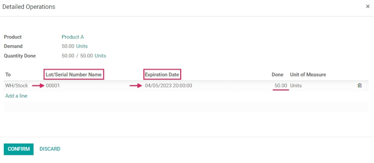
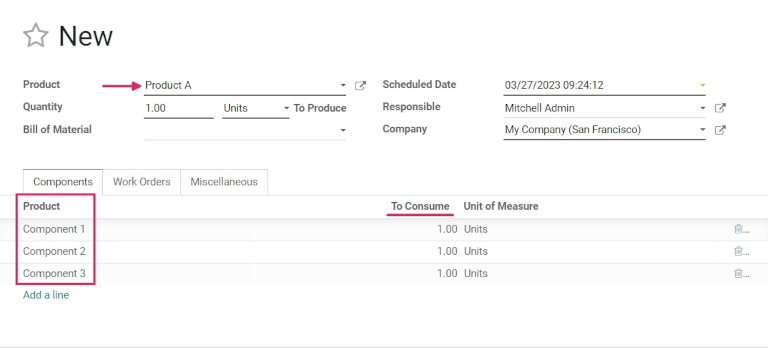

Expiration dates¶
In Odoo, expiration dates can be used to manage and track the lifecycles of perishable products, from purchase to sale. Using expiration dates reduces product loss due to unexpected expiry, and helps to avoid sending expired products to customers.
In Odoo, only products that are tracked using lots and serial numbers can be assigned expiration information. Once a lot or serial number has been assigned, an expiration date can be set. This is especially helpful for companies (such as food manufacturers) that consistently, or exclusively, buy and sell perishable products.
Enable expiration dates¶
To enable the use of expiration dates, go to , and scroll down to the Traceability section. Then, click the checkbox to enable the Lots & Serial Numbers feature.
Once that feature is activated, a new option will appear to enable Expiration Dates. Click that checkbox to enable the feature, and be sure to Save changes.

Tip
Once the Lots & Serial Numbers feature is activated, additional features appear to Display Lots & Serial Numbers on Delivery Slips; to Display Lots & Serial Numbers on Invoices; and to Display Expiration Dates on Delivery Slips. Activating these features helps with end-to-end traceability, making it easier to manage product recalls, identify “bad” batches of products, and more.
Configure expiration dates on products¶
Once the Lots & Serial Numbers and Expiration Dates features have been enabled in the settings of the Inventory app, expiration information can be configured on individual products.
To do so, go to , and select a product to edit. Selecting a product reveals the product form for that particular item. Once on the product form, click Edit in the upper-left corner to make changes.
Important
To be tracked using lots or serial numbers, or to configure expiration information, products must have their Product Type set as Storable Product under the General Information tab.
Then, click the Inventory tab, and scroll down to the Traceability section. From here, make sure that either By Unique Serial Number or By Lots is checked.
Once it is, a new Expiration Date checkbox appears that must also be clicked. When both are enabled, a new Dates field appears to the right.
Note
If a product has stock on-hand prior to activating tracking by lots or serial numbers, an inventory adjustment might need to be performed in order to assign lot numbers to the existing stock.
Tip
For processing large quantities of products on receipts or deliveries, it is recommended to track using lots, so multiple products can be traced back to the same lot, if any issues arise.
Under the Dates field, there are four categories of expiration information to configure for the product:
Expiration Time: the number of days after receiving products (either from a vendor or in stock after production) in which goods may become dangerous and should not be used or consumed.
Best Before Time: the number of days before the expiration date in which the goods start deteriorating, without necessarily being dangerous yet.
Removal Time: the number of days before the expiration date in which the goods should be removed from stock.
Alert Time: the number of days before the expiration date in which an alert should be raised on goods in a particular lot or containing a particular serial number.
Note
The values entered into these fields automatically compute the expiration date for goods entered into stock, whether purchased from a vendor or manufactured in-house.
Once all the expiration information has been configured, click Save to save all changes.
Tip
If the Dates field is not populated with any values for expiration information, dates (and lots) can be manually assigned upon receipts and deliveries in and out of the warehouse. Even when assigned, they can still be overwritten and changed manually if needed, as well.
Set expiration dates on receipts with lots & serial numbers¶
Generating expiration dates for incoming goods can be done directly from the purchase order. To create a purchase order, go to the app and click Create to create a new request for quotation (RFQ).
Then, fill out the information by adding a Vendor, and add products to the Product lines by clicking Add a product.
Choose the desired quantity to order by changing the number in the Quantity column, and click Confirm Order. This converts the RFQ into a purchase order.
Click the Receipt smart button at the top of the purchase order to be taken to the warehouse receipt form.
Note
Clicking Validate before assigning a serial number to the ordered product quantities causes a User Error popup to appear. The popup requires entry of a lot or serial number for the ordered products. The RFQ cannot be validated without an assigned lot or serial number.

From here, click the Additional Options menu (hamburger) icon located on the far-right of the product line. When clicked, a Detailed Operations pop-up will appear.
In this pop-up, click Add a line, and assign a lot or serial number under the Lot/Serial Number Name field.
An expiration date automatically populates, based on the configuration on the product form (if previously configured).
Tip
If the Dates field on the product form has not been configured, this date can be manually entered.
After the expiration date has been established, mark the Done quantities, and click Confirm to close the pop-up. Finally, click Validate.
A Traceability smart button will appear upon validating the receipt. Click the Traceability smart button to see the updated Traceability Report, which includes: a Reference document; the Product being traced; the Lot/Serial #; and more.
Set expiration dates on manufactured products¶
Expiration dates can also be generated for products manufactured in-house. To assign expiration dates to manufactured products, a manufacturing order (MO) needs to be completed.
To create a MO, go to , and click Create. Choose a product to manufacture from the Product field drop-down menu, then select the Quantity to produce.
Note
To manufacture a product, there must be materials to consume in the lines in the Product column. This can be achieved either by creating a Bill of Material for the Product, or manually adding materials to consume by clicking Add a line.
Once ready, click Confirm.
Next to Lot/Serial Number, either select an existing lot number from the drop-down menu, or click the green + sign to automatically assign a new lot number.
Then, select a number of units for the Quantity field, and click Mark as Done.
Click on the External Link icon in the assigned Lot/Serial Number field. A pop-up appears, revealing a detail form for that specific number.
On that pop-up, under the Dates tab, all expiration information that was previously configured for the product is displayed. That same information is also available on the detail form for that specific product, or by going to .

Sell products with expiration dates¶
Selling perishable products with expiration dates is done the same as any other type of product. The first step in selling perishable products is to create a sales order.
To do that, go to to create a new quotation, and fill out the information on the sales order form.
Add a Customer, click Add a product to add the desired products to the Product lines, and set a Quantity for the products.
Then, click the Other Info tab. Under the Delivery section, change the Delivery Date to a date after the expected date, and click the green checkmark icon to confirm the date. Finally, click Confirm to confirm the sales order.
Next, click the Delivery smart button at the top of the sales order to see the warehouse receipt form.
On the warehouse receipt form, click Validate, and then Apply in the accompanying pop-up window, to automatically process all Done quantities, and deliver the products to the customer.
If the products are delivered before the Alert Date set on the product form, then no alerts will be created.
Important
To sell perishable products with expiration dates, the Removal Strategy for the Location the products are stored in must be set to FEFO. If there is not enough stock of perishable products in one lot, Odoo will automatically take the remaining quantity required from a second lot with the next-soonest expiration date. Removal strategies can also be set on Product Categories.
View expiration dates for lots & serial numbers¶
To view (and/or group) all products with expiration dates by lot number, go to .
Once there, remove any default search filters from the Search… bar. Then, click Group By, choose Add Custom Group, and select the Expiration Date parameter from the drop-down menu. Finally, click Apply to apply the filter.
Doing so breaks down all perishable products, their expiration dates, and the assigned lot number.
Expiration alerts¶
To see expiration alerts, go to .
Then, click into a Lot/Serial Number with perishable products. Doing so reveals the serial number detail form. On the serial number detail form, click the Dates tab to see all expiration information related to the products.
To edit the form, click Edit in the upper-left corner of the form, then change the Expiration Date to today’s date (or earlier), and click Save to save changes.
After saving, the lot number form displays a red Expiration Alert at the top of the form to indicate that the products in this lot are either expired or expiring soon. From here, click back to the Lots/Serial Numbers page (via the breadcrumbs).
To see the new expiration alert, or any expiration alerts for products that are expired (or will expire soon), remove all of the search filters from the Search… bar on the Lots/Serial Numbers dashboard.
Then, click Filters, and choose Expiration Alerts.